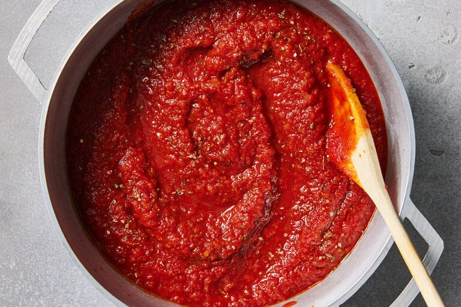

Pizza Sauce

Description
This is the pizza sauce from my uncle's old pizza shop. He
purchased it in large cans from a restaurant supplier but it
wasn't available in retail stores so I took it upon myself to
reverse-engineer it from memory over a period of years. This
recipe tastes almost exactly like I remember from my childhood.
Ingredients
- 28 oz can whole peeled San Marzano tomatoes
- 3 tbsp olive oil
- 2 tbsp oregano
- 1 tbsp lemon juice
- 3/4 tsp salt
- 1/4 tsp garlic powder
- 1/4 tsp black pepper
Steps
- Crush, chop, or blend tomatoes depending on your preference.
- Add tomatoes, olive oil, oregano, salt, garlic, and black pepper
to a medium-sized pan and stir.
- Simmer over medium low heat for 20-30 minutes.
Sauce should coat the back of a spoon.
- Remove from heat, stir in lemon juice, and enjoy!